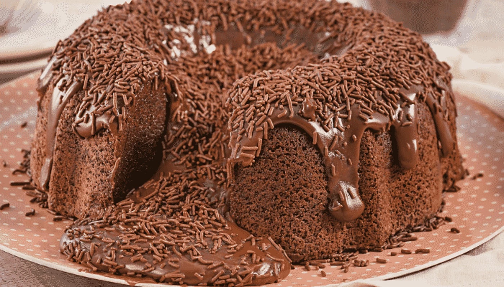

ingredientes
massa
100g de manteiga
3 ovos
1 xicara e meia de açucar
1 xicara de chocolate em pó
1 xicara de leite
2 xicara de farinha de trigo
1 colher de fermento
cobertura
1 caixa de leite condensado
1 caixa de creme de leite
1colher e manteiga
100g de chocolate meio amargo
50g de granulado para decorar
modo de preparo
em um recepiente adicione os ovos, açucar, manteiga o leite e misture bem
em seguida adicione a farinha de trigo e chocolate em pó aos poucos e os misture
depois de misturar tudo coloque o fermento e leve ao forne pré aquecido a 180°C por 20min
em uma panela adicione a manteiga o leite condensado, creme de leite eo chocolate em pó
em fogo baixo mecha ate ficar no ponto de cobertura
